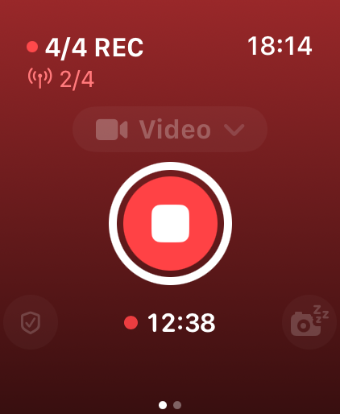
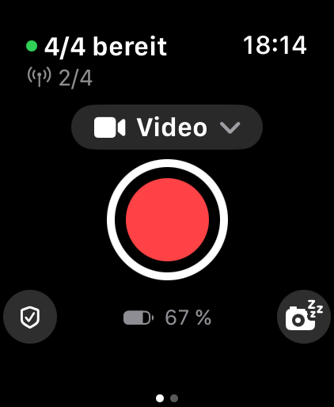
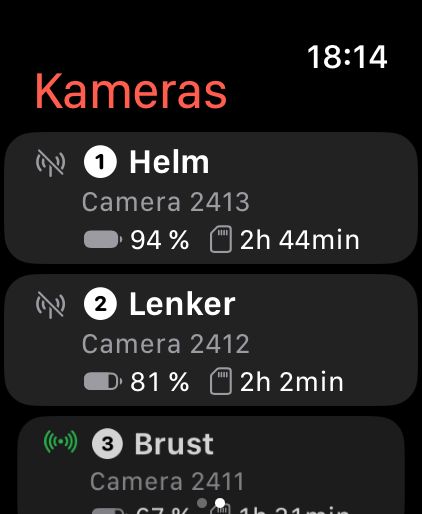
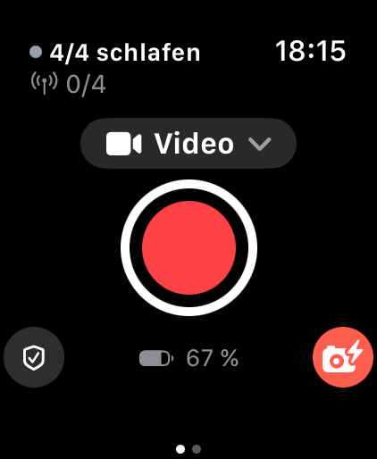

Starte und stoppe alle deine Action-Cams mit einem Tipp am Handgelenk. Ein Modus fürs ganze Rig, Akku und Restzeit je Kamera, Haptik erst nach Bestätigung.




Für Rider, Crews und Creator, die zwei oder mehr Action-Cams gleichzeitig einsetzen. GoWrist Pro startet und stoppt dein ganzes Kamera-Rig mit einem Tipp von der Apple Watch, ob an Helm, Lenker, Brust, Auto oder Boot, ohne das iPhone herauszuholen.
EIN TIPP FÜR DAS GANZE RIG
Tippe auf den großen Button oder nutze die Doppeltipp-Geste. GoWrist Pro verbindet sich per Bluetooth mit jeder ausgewählten Kamera und startet oder stoppt sie gemeinsam. Jede Kamera muss bestätigen, dass sie wirklich aufnimmt. Erst dann gibt die Uhr eine Haptik, und die Kopfzeile zählt die bestätigten Kameras, zum Beispiel „3/4 REC“. Startet eine Kamera nicht, nennt GoWrist Pro sie und bietet „Erneut versuchen“ an; die anderen nehmen weiter auf.
EIN MODUS FÜR ALLE KAMERAS
Video, Foto oder Zeitraffer einmal für das ganze Rig wählen. Angeboten werden nur Modi, die jede ausgewählte Kamera kann
Vor jedem Auslösen prüft GoWrist Pro den Modus jeder Kamera. So mischt das Rig nie Fotos und Video
Das Rig vor dem Start scharfschalten: weckt jede ausgewählte Kamera, gleicht den Modus an und liest Akku und Speicher
Das ganze Rig schlafen legen, um Akku zu sparen, und ohne Aufnahme wieder wecken
JEDE KAMERA IM BLICK
Jeder Kamera eine Nummer und eine Montageposition geben (Helm, Lenker, Brust und mehr), um gleiche Kameras zu unterscheiden
Kamera-Übersicht mit Verbindung, Akku und restlicher Aufnahmezeit bzw. Fotos je Kamera
Wählen, welche gekoppelten Kameras zum Rig gehören. Befehle gehen nur an die ausgewählten Kameras
Bei Bedarf eine einzelne Kamera in ihren Details stoppen oder starten
IMMER GRIFFBEREIT
Komplikation mit dem Rig-Status auf dem Zifferblatt, zum Beispiel „3/4 REC“
Steuerelement „Aufnahme umschalten“ für Kontrollzentrum und Smart-Stapel, auf der Apple Watch Ultra auch für die Aktionstaste
KOMPATIBILITÄT
Kann mit GoPro® HERO9 Black, HERO10 Black, HERO11 Black, HERO11 Black Mini, HERO12 Black, HERO13 Black und MAX 2 Kameras verwendet werden, mit aktueller Firmware. GoWrist Pro nutzt die öffentlich dokumentierte Open-GoPro-Bluetooth-Low-Energy-API. Jede Kamera koppelst du einmal, in ihrem Kopplungsmodus.
GUT ZU WISSEN
Die Apple Watch hält nur wenige Bluetooth-Verbindungen gleichzeitig (meist 2). Bis zu dieser Zahl starten deine Kameras gemeinsam. Bei mehr Kameras startet GoWrist Pro sie als schnelle Welle nacheinander, mit kurzem Versatz je Kamera.
Starten und Stoppen läuft, solange GoWrist Pro geöffnet ist. Bei vielen Kameras das Display an lassen, bis alle bestätigt haben.
GoWrist Pro beendet nie von selbst eine laufende Aufnahme. Bricht eine Verbindung während der Aufnahme ab, zeigt die App, dass die Kamera vielleicht noch aufnimmt.
Live-Vorschau und Medienübertragung sind über Bluetooth nicht verfügbar; die Kameras bieten sie über WLAN oder USB an.
Benötigt watchOS 26 oder neuer. Keine iPhone-App nötig.
DATENSCHUTZ
Kein Konto, kein Tracking, keine Werbung, keine Analyse. Deine Daten bleiben auf deiner Uhr. Details in der Datenschutzerklärung. Gekoppelte Kameras und Einstellungen bleiben auf deiner Uhr.